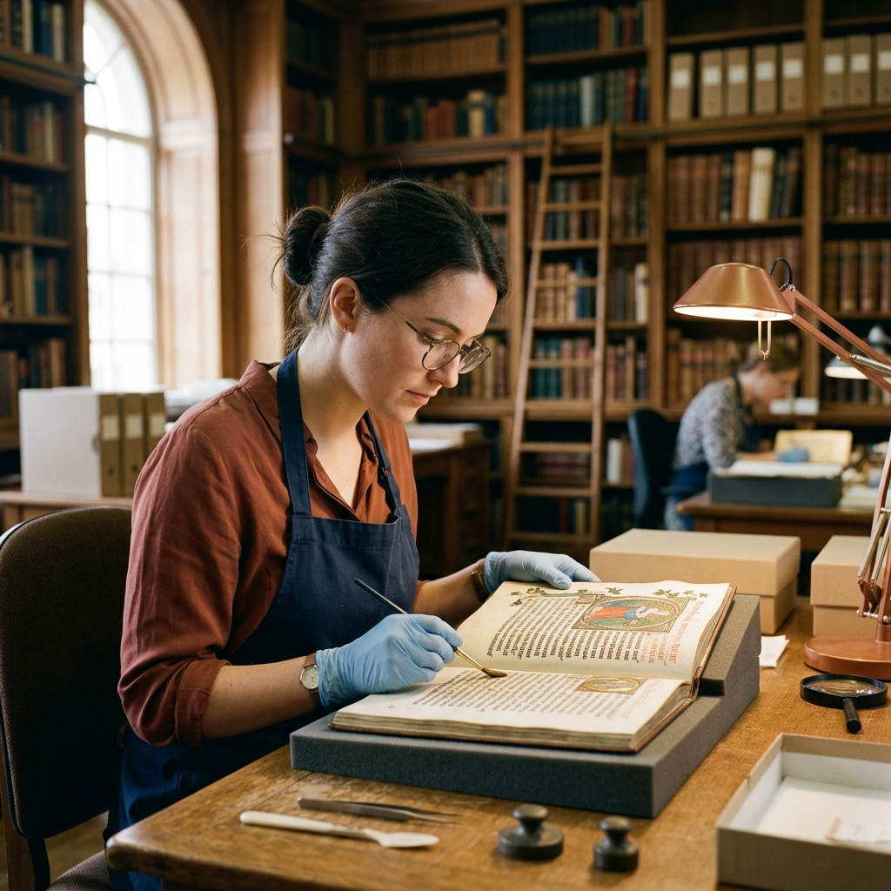
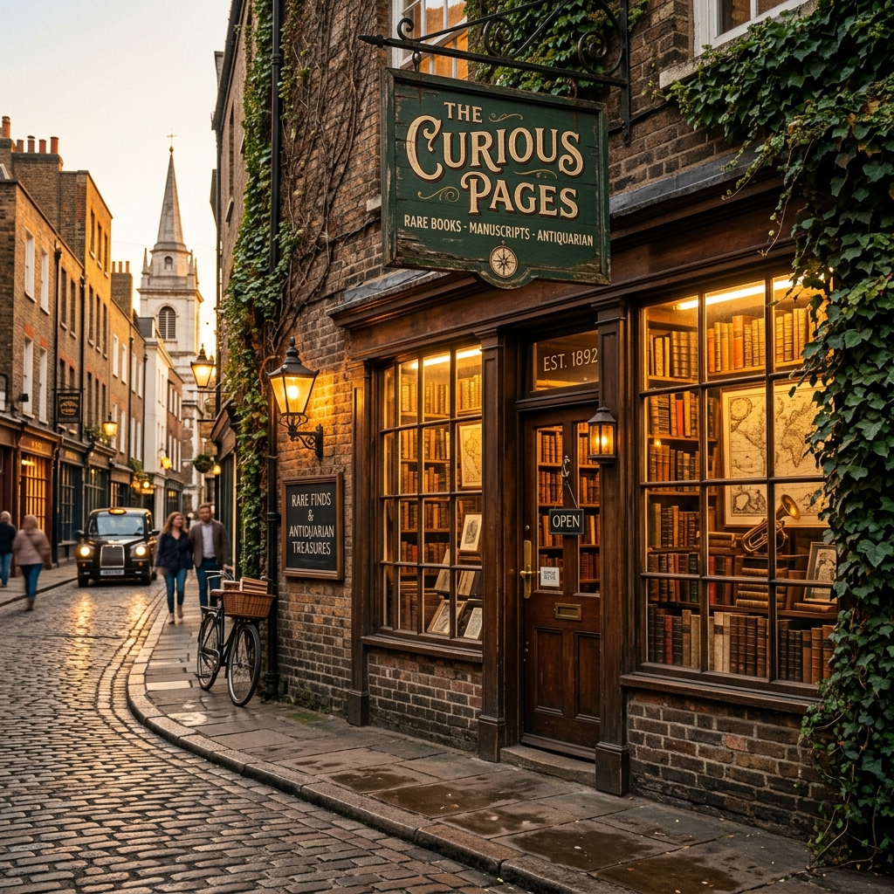

About Antiquarian Rare Books
A century of stewardship, scholarship, and the preservation of humanity's literary legacy.
130 Years of Literary Stewardship
From a modest Victorian bookshop to an internationally recognised authority on rare books and manuscripts.
Founded on Oxford Circle
Harold Edmund Fitch opens a modest antiquarian bookshop, specialising in Victorian first editions and hand-painted illuminations.
Royal Warrant of Appointment
Appointed Official Bookseller to His Majesty's Household — cementing our reputation for impeccable provenance research and discretion.
Forensic Authentication Lab
We established one of Europe's first dedicated rare book forensics laboratories, pioneering paper stock dating and ink composition analysis.
International Expansion
Partnerships established with the Bibliothèque nationale de France, the Library of Congress, and 40+ private foundations worldwide.
Digital Archive Initiative
Launch of our proprietary Provenance Network — a global digital archive linking auction records, library stamps, and dealer histories across 200 years.
Meet the Bibliophiles
Specialists in rare books, manuscripts, and literary antiquities, each with decades of dedicated expertise.

Dr. Margaret Fitch
Head Curator & Bibliographer
A great-great-granddaughter of our founder, Margaret has 32 years of fellowship at the British Library, specialising in Victorian periodical literature.
Prof. James Alderton
Senior Authentication Specialist
Oxford fellow and former director of the Ashmolean Book Forensics Unit. Author of three seminal works on paper dating and incunabula authentication.

Dr. Sophia Rahman
Manuscript Conservation
A specialist in Islamic manuscripts and medieval illuminations. Trained at the Institut National du Patrimoine, Paris, with 18 years in manuscript conservation.
Mission & Values
The philosophy that has guided four generations of Antiquarian curators.
Integrity
Absolute honesty in provenance reporting — we will never misrepresent condition, edition, or authenticity.
Stewardship
Each book entrusted to us is handled with museum-grade care and documented with the highest bibliographic standards.
Scholarship
Our team maintains active research programmes — publishing in peer-reviewed journals and presenting at international bibliographic conferences.
Accessibility
We believe these cultural artefacts should be accessible for study. We partner with 60+ public institutions to facilitate academic access.
From Institutions & Collectors
"Antiquarian authenticated our Caxton incunabulum in three weeks — a task that three other firms declined. Their report is a masterwork of bibliographic scholarship. We are now regular clients."
"I purchased what I believed was a reprinted Dickens — they discovered it was a presentation copy inscribed personally by Dickens himself. The house's scholarly rigour transforming my collection's most important acquisition."
"We commissioned Antiquarian to curate our foundation's 2,400-volume private library. The resulting catalogue is a landmark scholarly document. The team's dedication was extraordinary."

Come In. Browse. Discover.
Our shop on Oxford Circle is open Monday to Saturday. We welcome collectors, scholars, and curious readers alike. White-glove viewing of our vault items by appointment.
- 144 Oxford Circle, Suite B, London
- Monday–Saturday · 09:00–18:00
- +44 (0) 20 7946 0831